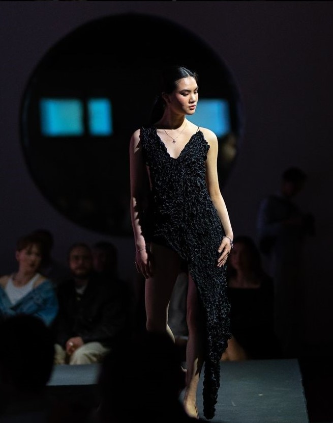
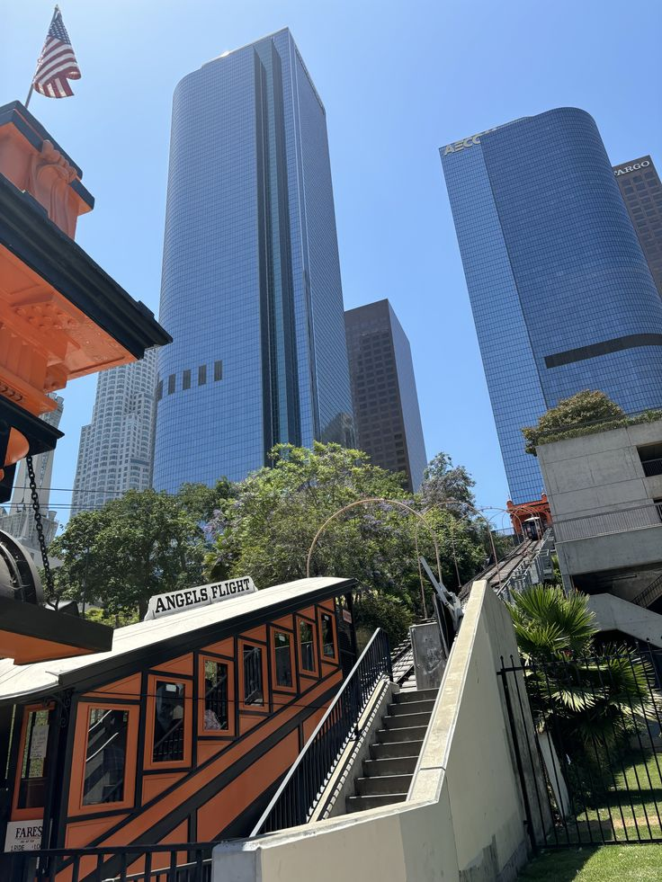
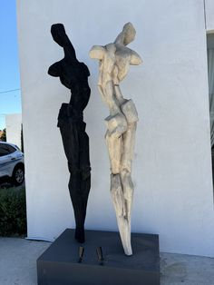

Hi I'm Louise!
I'm a student at Jönköping University studying the New Media Design program. I have a passion for creativity in all forms, wther it's graphic design, ceramics, paintings or dance. Outside of my studies, I'm a dance teacher and co-run a dance school alongside three of my friends. I specialize in hip-hop and commercial street dance, and I love bringing energy and inspiration to every class. Dance has always been a huge part of my life—it's where I find freedom, self-expression, and connection with others.
  